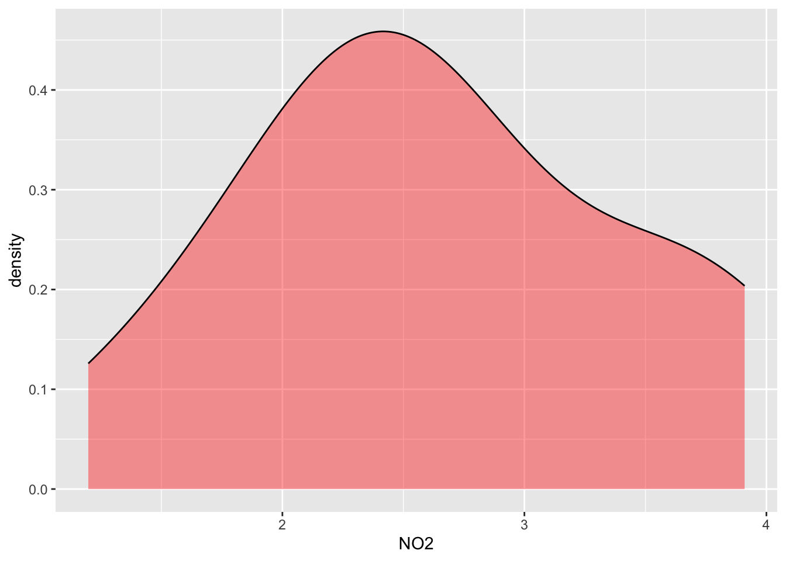
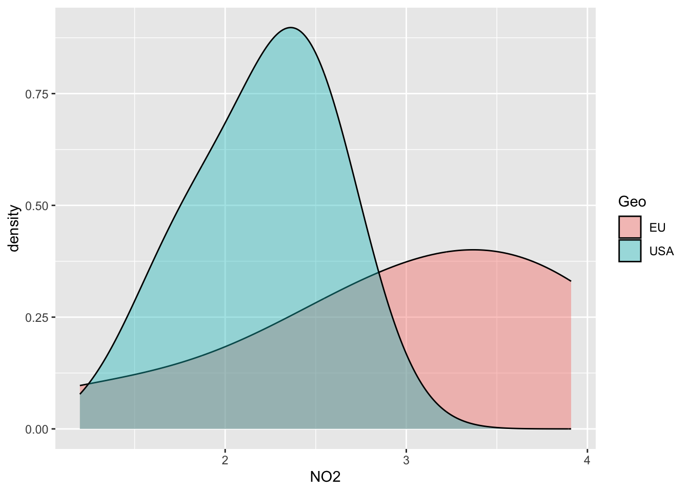

#libraries
library(ggplot2)
library(base)
library(psych)
library(dplyr)
library(stats)
library(FSA)
library(ggpubr)
library(corrplot)
library(ggpmisc)
library(graphics)
library(broom)
library(dplyr)
library(tidyr)Statistics
Load libraries & functions
#Function indice_normality
indices_normality <- function(rich, nrow, ncol) {
### p-value < 0.05 means data failed normality test
par(mfrow = c(nrow, ncol))
for (i in names(rich)) {
shap <- shapiro.test(rich[, i])
qqnorm(rich[, i], main = i, sub = shap$p.value)
qqline(rich[, i])
}
par(mfrow = c(1, 1))
}
############
#Function multiple panel with linear regression & r values
regression_line = function(x,y, ...){
points(x,y,...)
linear_regression = lm(y~x)
linear_regression_line = abline(linear_regression, col="red")
}
###########
panel.cor <- function(x, y, digits = 2, prefix = "", cex.cor, ...) {
usr <- par("usr")
on.exit(par(usr))
par(usr = c(0, 1, 0, 1))
r <- abs(cor(x, y, use = "complete.obs"))
txt <- format(c(r, 0.123456789), digits = digits)[1]
txt <- paste(prefix, txt, sep = "")
if (missing(cex.cor)) cex.cor <- 0.8/strwidth(txt)
text(0.5, 0.5, txt, cex = cex.cor * (1 + r) / 2)
}I- Manipulate a data table
a/ Read a table containing data
alldata = read.table(file ="./data/data_explore.txt",
check.names = TRUE,
header = TRUE,
sep = "\t",
row.names = 1)#see
alldata Description Geo groupe SiOH4 NO2 NO3 NH4 PO4 NT PT Chla
U1H USA_H USA A 1690 2.324 0.083 0.856 0.467 0.115 9.539 4.138
U2H USA_H USA A 115 1.813 0.256 0.889 0.324 0.132 9.946 3.565
U3H USA_H USA A 395 2.592 0.105 1.125 0.328 0.067 9.378 3.391
U4H USA_H USA A 395 2.381 0.231 0.706 0.450 0.109 8.817 3.345
U5F USA_F USA B 200 1.656 0.098 0.794 0.367 0.095 7.847 2.520
U6F USA_F USA B 235 2.457 0.099 1.087 0.349 0.137 8.689 3.129
U7F USA_F USA B 235 2.457 0.099 1.087 0.349 0.137 8.689 3.129
U8F USA_F USA B 1355 2.028 0.103 1.135 0.216 0.128 8.623 3.137
E1H EU_H EU C 945 2.669 0.136 0.785 0.267 0.114 9.146 3.062
E2H EU_H EU C 1295 2.206 0.249 0.768 0.629 0.236 9.013 3.455
E3H EU_H EU C 1300 3.004 0.251 0.727 0.653 0.266 8.776 3.230
E4H EU_H EU C 1600 3.016 0.257 0.695 0.491 0.176 8.968 4.116
E5F EU_F EU D 1355 1.198 0.165 1.099 0.432 0.180 8.256 3.182
E6F EU_F EU D 1590 3.868 0.253 0.567 0.533 0.169 8.395 3.126
E7F EU_F EU D 2265 3.639 0.255 0.658 0.665 0.247 8.991 3.843
E8F EU_F EU D 1180 3.910 0.107 0.472 0.490 0.134 8.954 4.042
E9F EU_F EU D 1545 3.607 0.139 0.444 0.373 0.167 9.817 3.689
T S Sigma_t observed shannon evenness dominance_relative
U1H 0.0182 23.0308 38.9967 26.9631 0.9447863 3.146480 0.8780420
U2H 0.0000 22.7338 37.6204 26.0046 0.9477924 3.177766 0.8937989
U3H 0.0000 22.6824 37.6627 26.0521 0.9577758 3.408022 0.9060997
U4H 0.0000 22.6854 37.6176 26.0137 0.9414576 3.112066 0.8684385
U5F 0.0000 22.5610 37.5960 26.0332 0.9491313 3.246802 0.8925706
U6F 0.0000 18.8515 37.4542 26.9415 0.9570249 3.350694 0.9083230
U7F 0.0000 18.8515 37.4542 26.9415 0.9363446 3.097474 0.8396788
U8F 0.0102 24.1905 38.3192 26.1037 0.9271578 2.978541 0.8594252
E1H 0.0000 24.1789 38.3213 26.1065 0.9253250 2.993341 0.8560944
E2H 0.0000 22.0197 39.0877 27.3241 0.9439556 3.213508 0.8653415
E3H 0.0134 22.0515 39.0884 27.3151 0.8247810 2.440971 0.7325395
E4H 0.0000 23.6669 38.9699 26.7536 0.9435901 3.157702 0.8811735
E5F 0.0000 23.6814 38.9708 26.7488 0.9488744 3.278296 0.8663140
E6F 0.0000 23.1236 39.0054 26.9423 0.9452117 3.108474 0.8890226
E7F 0.0132 23.3147 38.9885 26.8713 0.9517578 3.307644 0.9028494
E8F 0.0172 22.6306 38.9094 27.0131 0.9443038 3.105908 0.8667202
E9F 0.0062 22.9545 38.7777 26.8172 0.9487545 3.180393 0.9095912
NRI NTI PD X
U1H 0.10274791 -1.72903786 -1.62669669 3.508045
U2H 0.10274791 1.12496864 -0.75543498 3.330466
U3H 0.09677419 -0.23029299 -0.69141166 3.688595
U4H 0.10991637 -2.48017258 -0.64705490 3.401944
U5F 0.10991637 -0.17940416 -0.67857965 3.430623
U6F 0.08721625 -0.40633803 0.05055793 3.293266
U7F 0.14336918 1.79668405 -0.84513858 3.428512
U8F 0.16606930 0.12915148 0.12211753 2.969649
E1H 0.18876941 -0.07458097 1.95798975 2.451799
E2H 0.13620072 0.17114822 1.11902329 3.127781
E3H 0.38351254 2.65479470 -0.01038346 2.422910
E4H 0.13022700 -1.42798211 -0.64181960 3.157211
E5F 0.10633214 -2.49590494 0.79285403 3.433528
E6F 0.09438471 -0.10962187 0.81104335 2.921706
E7F 0.09677419 -1.21112926 0.51096388 3.282069
E8F 0.09438471 -0.04833770 0.26352612 2.879671
E9F 0.10394265 0.50404786 2.43432750 2.4303421- Can you display only the column NO3 of the table?
2- Can you display the row names of the table? (means U1H, U2H etc)
3- Can you select and display any 3 columns of the table?
b/ Select a subset from data table
#Keep only data that correspond to "EU" in the Geo column
subgroupEU = subset(alldata, Geo=="EU")
#See
subgroupEU Description Geo groupe SiOH4 NO2 NO3 NH4 PO4 NT PT Chla
E1H EU_H EU C 945 2.669 0.136 0.785 0.267 0.114 9.146 3.062
E2H EU_H EU C 1295 2.206 0.249 0.768 0.629 0.236 9.013 3.455
E3H EU_H EU C 1300 3.004 0.251 0.727 0.653 0.266 8.776 3.230
E4H EU_H EU C 1600 3.016 0.257 0.695 0.491 0.176 8.968 4.116
E5F EU_F EU D 1355 1.198 0.165 1.099 0.432 0.180 8.256 3.182
E6F EU_F EU D 1590 3.868 0.253 0.567 0.533 0.169 8.395 3.126
E7F EU_F EU D 2265 3.639 0.255 0.658 0.665 0.247 8.991 3.843
E8F EU_F EU D 1180 3.910 0.107 0.472 0.490 0.134 8.954 4.042
E9F EU_F EU D 1545 3.607 0.139 0.444 0.373 0.167 9.817 3.689
T S Sigma_t observed shannon evenness dominance_relative
E1H 0.0000 24.1789 38.3213 26.1065 0.9253250 2.993341 0.8560944
E2H 0.0000 22.0197 39.0877 27.3241 0.9439556 3.213508 0.8653415
E3H 0.0134 22.0515 39.0884 27.3151 0.8247810 2.440971 0.7325395
E4H 0.0000 23.6669 38.9699 26.7536 0.9435901 3.157702 0.8811735
E5F 0.0000 23.6814 38.9708 26.7488 0.9488744 3.278296 0.8663140
E6F 0.0000 23.1236 39.0054 26.9423 0.9452117 3.108474 0.8890226
E7F 0.0132 23.3147 38.9885 26.8713 0.9517578 3.307644 0.9028494
E8F 0.0172 22.6306 38.9094 27.0131 0.9443038 3.105908 0.8667202
E9F 0.0062 22.9545 38.7777 26.8172 0.9487545 3.180393 0.9095912
NRI NTI PD X
E1H 0.18876941 -0.07458097 1.95798975 2.451799
E2H 0.13620072 0.17114822 1.11902329 3.127781
E3H 0.38351254 2.65479470 -0.01038346 2.422910
E4H 0.13022700 -1.42798211 -0.64181960 3.157211
E5F 0.10633214 -2.49590494 0.79285403 3.433528
E6F 0.09438471 -0.10962187 0.81104335 2.921706
E7F 0.09677419 -1.21112926 0.51096388 3.282069
E8F 0.09438471 -0.04833770 0.26352612 2.879671
E9F 0.10394265 0.50404786 2.43432750 2.430342#Keep only data that correspond to group A & B in the group column
subgroupAB = subset(alldata, groupe=="A" | groupe=="B")
#See
subgroupAB Description Geo groupe SiOH4 NO2 NO3 NH4 PO4 NT PT Chla
U1H USA_H USA A 1690 2.324 0.083 0.856 0.467 0.115 9.539 4.138
U2H USA_H USA A 115 1.813 0.256 0.889 0.324 0.132 9.946 3.565
U3H USA_H USA A 395 2.592 0.105 1.125 0.328 0.067 9.378 3.391
U4H USA_H USA A 395 2.381 0.231 0.706 0.450 0.109 8.817 3.345
U5F USA_F USA B 200 1.656 0.098 0.794 0.367 0.095 7.847 2.520
U6F USA_F USA B 235 2.457 0.099 1.087 0.349 0.137 8.689 3.129
U7F USA_F USA B 235 2.457 0.099 1.087 0.349 0.137 8.689 3.129
U8F USA_F USA B 1355 2.028 0.103 1.135 0.216 0.128 8.623 3.137
T S Sigma_t observed shannon evenness dominance_relative
U1H 0.0182 23.0308 38.9967 26.9631 0.9447863 3.146480 0.8780420
U2H 0.0000 22.7338 37.6204 26.0046 0.9477924 3.177766 0.8937989
U3H 0.0000 22.6824 37.6627 26.0521 0.9577758 3.408022 0.9060997
U4H 0.0000 22.6854 37.6176 26.0137 0.9414576 3.112066 0.8684385
U5F 0.0000 22.5610 37.5960 26.0332 0.9491313 3.246802 0.8925706
U6F 0.0000 18.8515 37.4542 26.9415 0.9570249 3.350694 0.9083230
U7F 0.0000 18.8515 37.4542 26.9415 0.9363446 3.097474 0.8396788
U8F 0.0102 24.1905 38.3192 26.1037 0.9271578 2.978541 0.8594252
NRI NTI PD X
U1H 0.10274791 -1.7290379 -1.62669669 3.508045
U2H 0.10274791 1.1249686 -0.75543498 3.330466
U3H 0.09677419 -0.2302930 -0.69141166 3.688595
U4H 0.10991637 -2.4801726 -0.64705490 3.401944
U5F 0.10991637 -0.1794042 -0.67857965 3.430623
U6F 0.08721625 -0.4063380 0.05055793 3.293266
U7F 0.14336918 1.7966841 -0.84513858 3.428512
U8F 0.16606930 0.1291515 0.12211753 2.969649c/ How to Add a new variable after loading table
You forgot to add a variable to your table & you have already loaded your table in R session…how to manage this?
# FIRST create a dataframe with a vector with values of your new variable
mydataframe = data.frame(MYNEWVAR = c("sediment", "mer", "sediment",
"trap", "mer", "mer",
"trap", "trap", "trap",
"sediment", "mer", "mer",
"mer", "trap", "trap",
"mer", "mer"))
#Add rownames=samples names
row.names(mydataframe) = c("U1H", "U2H", "U5F",
"U6F", "U3H", "U7F",
"U4H", "U8F", "E2H",
"E3H", "E5F", "E1H",
"E7F", "E6F", "E4H",
"E9F", "E8F")
# See & notice that order of sample names is not the same as in mesdata
mydataframe MYNEWVAR
U1H sediment
U2H mer
U5F sediment
U6F trap
U3H mer
U7F mer
U4H trap
U8F trap
E2H trap
E3H sediment
E5F mer
E1H mer
E7F mer
E6F trap
E4H trap
E9F mer
E8F merMerge the two dataframes!
#Option "by=" the way that you want to merge... here looking for same row.names between the two dataframe
# in mydataframe and mesdata
alldata = merge(alldata,mydataframe, by="row.names")
#check that it works
alldata Row.names Description Geo groupe SiOH4 NO2 NO3 NH4 PO4 NT PT
1 E1H EU_H EU C 945 2.669 0.136 0.785 0.267 0.114 9.146
2 E2H EU_H EU C 1295 2.206 0.249 0.768 0.629 0.236 9.013
3 E3H EU_H EU C 1300 3.004 0.251 0.727 0.653 0.266 8.776
4 E4H EU_H EU C 1600 3.016 0.257 0.695 0.491 0.176 8.968
5 E5F EU_F EU D 1355 1.198 0.165 1.099 0.432 0.180 8.256
6 E6F EU_F EU D 1590 3.868 0.253 0.567 0.533 0.169 8.395
7 E7F EU_F EU D 2265 3.639 0.255 0.658 0.665 0.247 8.991
8 E8F EU_F EU D 1180 3.910 0.107 0.472 0.490 0.134 8.954
9 E9F EU_F EU D 1545 3.607 0.139 0.444 0.373 0.167 9.817
10 U1H USA_H USA A 1690 2.324 0.083 0.856 0.467 0.115 9.539
11 U2H USA_H USA A 115 1.813 0.256 0.889 0.324 0.132 9.946
12 U3H USA_H USA A 395 2.592 0.105 1.125 0.328 0.067 9.378
13 U4H USA_H USA A 395 2.381 0.231 0.706 0.450 0.109 8.817
14 U5F USA_F USA B 200 1.656 0.098 0.794 0.367 0.095 7.847
15 U6F USA_F USA B 235 2.457 0.099 1.087 0.349 0.137 8.689
16 U7F USA_F USA B 235 2.457 0.099 1.087 0.349 0.137 8.689
17 U8F USA_F USA B 1355 2.028 0.103 1.135 0.216 0.128 8.623
Chla T S Sigma_t observed shannon evenness dominance_relative
1 3.062 0.0000 24.1789 38.3213 26.1065 0.9253250 2.993341 0.8560944
2 3.455 0.0000 22.0197 39.0877 27.3241 0.9439556 3.213508 0.8653415
3 3.230 0.0134 22.0515 39.0884 27.3151 0.8247810 2.440971 0.7325395
4 4.116 0.0000 23.6669 38.9699 26.7536 0.9435901 3.157702 0.8811735
5 3.182 0.0000 23.6814 38.9708 26.7488 0.9488744 3.278296 0.8663140
6 3.126 0.0000 23.1236 39.0054 26.9423 0.9452117 3.108474 0.8890226
7 3.843 0.0132 23.3147 38.9885 26.8713 0.9517578 3.307644 0.9028494
8 4.042 0.0172 22.6306 38.9094 27.0131 0.9443038 3.105908 0.8667202
9 3.689 0.0062 22.9545 38.7777 26.8172 0.9487545 3.180393 0.9095912
10 4.138 0.0182 23.0308 38.9967 26.9631 0.9447863 3.146480 0.8780420
11 3.565 0.0000 22.7338 37.6204 26.0046 0.9477924 3.177766 0.8937989
12 3.391 0.0000 22.6824 37.6627 26.0521 0.9577758 3.408022 0.9060997
13 3.345 0.0000 22.6854 37.6176 26.0137 0.9414576 3.112066 0.8684385
14 2.520 0.0000 22.5610 37.5960 26.0332 0.9491313 3.246802 0.8925706
15 3.129 0.0000 18.8515 37.4542 26.9415 0.9570249 3.350694 0.9083230
16 3.129 0.0000 18.8515 37.4542 26.9415 0.9363446 3.097474 0.8396788
17 3.137 0.0102 24.1905 38.3192 26.1037 0.9271578 2.978541 0.8594252
NRI NTI PD X MYNEWVAR
1 0.18876941 -0.07458097 1.95798975 2.451799 mer
2 0.13620072 0.17114822 1.11902329 3.127781 trap
3 0.38351254 2.65479470 -0.01038346 2.422910 sediment
4 0.13022700 -1.42798211 -0.64181960 3.157211 trap
5 0.10633214 -2.49590494 0.79285403 3.433528 mer
6 0.09438471 -0.10962187 0.81104335 2.921706 trap
7 0.09677419 -1.21112926 0.51096388 3.282069 mer
8 0.09438471 -0.04833770 0.26352612 2.879671 mer
9 0.10394265 0.50404786 2.43432750 2.430342 mer
10 0.10274791 -1.72903786 -1.62669669 3.508045 sediment
11 0.10274791 1.12496864 -0.75543498 3.330466 mer
12 0.09677419 -0.23029299 -0.69141166 3.688595 mer
13 0.10991637 -2.48017258 -0.64705490 3.401944 trap
14 0.10991637 -0.17940416 -0.67857965 3.430623 sediment
15 0.08721625 -0.40633803 0.05055793 3.293266 trap
16 0.14336918 1.79668405 -0.84513858 3.428512 mer
17 0.16606930 0.12915148 0.12211753 2.969649 trapII- Descriptive statistics
Investigates each variable separately. Distribution of individual variables, mean, dispersion
a/ Get stats info for all variables
descriptstats = describe(alldata)
#see
descriptstats vars n mean sd median trimmed mad min max
Row.names* 1 17 9.00 5.05 9.00 9.00 5.93 1.00 17.00
Description* 2 17 2.41 1.18 2.00 2.40 1.48 1.00 4.00
Geo* 3 17 1.47 0.51 1.00 1.47 0.00 1.00 2.00
groupe* 4 17 2.59 1.18 3.00 2.60 1.48 1.00 4.00
SiOH4 5 17 1040.88 653.99 1295.00 1021.00 518.91 115.00 2265.00
NO2 6 17 2.64 0.78 2.46 2.65 0.81 1.20 3.91
NO3 7 17 0.17 0.07 0.14 0.17 0.06 0.08 0.26
NH4 8 17 0.82 0.23 0.78 0.82 0.19 0.44 1.14
PO4 9 17 0.43 0.13 0.43 0.43 0.12 0.22 0.66
NT 10 17 0.15 0.05 0.14 0.15 0.04 0.07 0.27
PT 11 17 8.93 0.54 8.95 8.94 0.39 7.85 9.95
Chla 12 17 3.42 0.44 3.35 3.43 0.32 2.52 4.14
T 13 17 0.00 0.01 0.00 0.00 0.00 0.00 0.02
S 14 17 22.54 1.52 22.73 22.68 0.86 18.85 24.19
Sigma_t 15 17 38.40 0.67 38.78 38.42 0.46 37.45 39.09
observed 16 17 26.64 0.48 26.82 26.64 0.29 26.00 27.32
shannon 17 17 0.94 0.03 0.94 0.94 0.01 0.82 0.96
evenness 18 17 3.14 0.21 3.16 3.16 0.09 2.44 3.41
dominance_relative 19 17 0.87 0.04 0.88 0.88 0.02 0.73 0.91
NRI 20 17 0.13 0.07 0.11 0.12 0.02 0.09 0.38
NTI 21 17 -0.24 1.37 -0.11 -0.28 0.91 -2.50 2.65
PD 22 17 0.13 1.06 0.05 0.09 1.10 -1.63 2.43
X 23 17 3.13 0.39 3.28 3.14 0.23 2.42 3.69
MYNEWVAR* 24 17 1.88 0.93 2.00 1.87 1.48 1.00 3.00
range skew kurtosis se
Row.names* 16.00 0.00 -1.41 1.22
Description* 3.00 0.09 -1.59 0.29
Geo* 1.00 0.11 -2.10 0.12
groupe* 3.00 -0.09 -1.59 0.29
SiOH4 2150.00 -0.06 -1.35 158.62
NO2 2.71 0.13 -1.03 0.19
NO3 0.17 0.18 -1.91 0.02
NH4 0.69 0.03 -1.30 0.05
PO4 0.45 0.31 -1.03 0.03
NT 0.20 0.63 -0.62 0.01
PT 2.10 0.10 -0.49 0.13
Chla 1.62 0.12 -0.72 0.11
T 0.02 0.88 -1.01 0.00
S 5.34 -1.47 1.25 0.37
Sigma_t 1.63 -0.34 -1.81 0.16
observed 1.32 -0.25 -1.60 0.12
shannon 0.13 -2.98 8.28 0.01
evenness 0.97 -1.84 3.97 0.05
dominance_relative 0.18 -2.12 4.77 0.01
NRI 0.30 2.63 6.58 0.02
NTI 5.15 0.16 -0.50 0.33
PD 4.06 0.54 -0.53 0.26
X 1.27 -0.65 -0.91 0.10
MYNEWVAR* 2.00 0.21 -1.87 0.22b/ Get stats info by groups
descriptstats_groups = describeBy(alldata, alldata$Geo, skew=FALSE,ranges=FALSE)
#see
descriptstats_groups
Descriptive statistics by group
group: EU
vars n mean sd se
Row.names* 1 9 5.00 2.74 0.91
Description* 2 9 1.44 0.53 0.18
Geo* 3 9 1.00 0.00 0.00
groupe* 4 9 3.56 0.53 0.18
SiOH4 5 9 1452.78 370.60 123.53
NO2 6 9 3.01 0.89 0.30
NO3 7 9 0.20 0.06 0.02
NH4 8 9 0.69 0.20 0.07
PO4 9 9 0.50 0.13 0.04
NT 10 9 0.19 0.05 0.02
PT 11 9 8.92 0.45 0.15
Chla 12 9 3.53 0.41 0.14
T 13 9 0.01 0.01 0.00
S 14 9 23.07 0.74 0.25
Sigma_t 15 9 38.90 0.24 0.08
observed 16 9 26.88 0.36 0.12
shannon 17 9 0.93 0.04 0.01
evenness 18 9 3.09 0.26 0.09
dominance_relative 19 9 0.86 0.05 0.02
NRI 20 9 0.15 0.09 0.03
NTI 21 9 -0.23 1.44 0.48
PD 22 9 0.80 0.95 0.32
X 23 9 2.90 0.39 0.13
MYNEWVAR* 24 9 1.78 0.97 0.32
------------------------------------------------------------
group: USA
vars n mean sd se
Row.names* 1 8 13.50 2.45 0.87
Description* 2 8 3.50 0.53 0.19
Geo* 3 8 2.00 0.00 0.00
groupe* 4 8 1.50 0.53 0.19
SiOH4 5 8 577.50 597.59 211.28
NO2 6 8 2.21 0.34 0.12
NO3 7 8 0.13 0.07 0.02
NH4 8 8 0.96 0.17 0.06
PO4 9 8 0.36 0.08 0.03
NT 10 8 0.12 0.02 0.01
PT 11 8 8.94 0.65 0.23
Chla 12 8 3.29 0.46 0.16
T 13 8 0.00 0.01 0.00
S 14 8 21.95 1.98 0.70
Sigma_t 15 8 37.84 0.54 0.19
observed 16 8 26.38 0.47 0.17
shannon 17 8 0.95 0.01 0.00
evenness 18 8 3.19 0.14 0.05
dominance_relative 19 8 0.88 0.02 0.01
NRI 20 8 0.11 0.03 0.01
NTI 21 8 -0.25 1.38 0.49
PD 22 8 -0.63 0.55 0.19
X 23 8 3.38 0.21 0.07
MYNEWVAR* 24 8 2.00 0.93 0.33c/ Distribution plot
#Distribution of NO2 for all data
ggplot(data=alldata, aes(x=NO2)) +
geom_density(adjust=1.5, alpha=.4,show.legend=TRUE, aes(fill="red"))
#Distribution of NO2 separated by groups
ggplot(data=alldata, aes(x=NO2, group=Geo, fill=Geo)) +
geom_density(adjust=1.5, alpha=.4) 
III- Inferential Statistics & Tests
_____________________________________________________________________
Normality test: Check the Normal or not normal distribution of your data to choose the right statistical test!
- Shapiro test: H0 Null Hypothesis: follows Normal distribution!
Means if p<0.05 -> reject the H0 (so does not follow a normal distribution)
- Q-Qplots: Compare your distribution with a theoretical normal distribution
If your data follow a normal distribution, you’re expecting a linear relationship
theoritical vs. experimental
Function indices_normality() plots the results
_____________________________________________________________________
a/ Select indices to test & run normality check : select function
myselection = select(alldata, observed,NRI, evenness)
#See
myselection observed NRI evenness
1 26.1065 0.18876941 2.993341
2 27.3241 0.13620072 3.213508
3 27.3151 0.38351254 2.440971
4 26.7536 0.13022700 3.157702
5 26.7488 0.10633214 3.278296
6 26.9423 0.09438471 3.108474
7 26.8713 0.09677419 3.307644
8 27.0131 0.09438471 3.105908
9 26.8172 0.10394265 3.180393
10 26.9631 0.10274791 3.146480
11 26.0046 0.10274791 3.177766
12 26.0521 0.09677419 3.408022
13 26.0137 0.10991637 3.112066
14 26.0332 0.10991637 3.246802
15 26.9415 0.08721625 3.350694
16 26.9415 0.14336918 3.097474
17 26.1037 0.16606930 2.978541b/ Run Normality test: QQ-plot +Shapiro
indices_normality(myselection, nrow =3, ncol = 2)4- What are your conclusions?
5- PLease can you run a new normality test Using the parameters NO2,NO3,NH4,PO4 from the alldata object
c/ The ANOVA test
ANOVA is parametric (MUST follows normal distribution) AND run at least with 3 groups or more on ONE variable
_____________________________________
The procedure is :Check Normality
Check homogeneity of variance
Apply ANOVA test (global test)
Apply Post-hoc Test (pairwise group test)
_____________________________________Select number of groups
# How many groups used? See the column "groupe" of alldata (4 groups A,B,C,D):
factor(alldata$groupe) [1] C C C C D D D D D A A A A B B B B
Levels: A B C D# Check homogeneity of variance between groups
# (this is to avoid bias in ANOVA result & keep the power of the test)
# H0= equality of variances in the different populations
bartlett.test(NH4 ~ groupe, alldata)
Bartlett test of homogeneity of variances
data: NH4 by groupe
Bartlett's K-squared = 6.8824, df = 3, p-value = 0.075746- Conclusion?
7- Why I can apply ANOVA on NH4 data?
NB: Alternative to Bartlett : Levene test (package car), less sensitive to normality deviation
Apply ANOVA global test
IMPORTANT: Global Test: Anova tell you if that some of the group means are different, but you don’t know which pairs of groups are different!
#Global test
aov_NH4 = aov(NH4 ~ groupe, alldata)
summary(aov_NH4) Df Sum Sq Mean Sq F value Pr(>F)
groupe 3 0.3623 0.12076 3.482 0.0473 *
Residuals 13 0.4509 0.03469
---
Signif. codes: 0 '***' 0.001 '**' 0.01 '*' 0.05 '.' 0.1 ' ' 1Apply Post-hoc test
IMPORTANT Anova told you that there is a significant difference between some groups… but Which pairs of groups are different? -> Post-hoc test answers this: Tukey multiple pairwise-comparisons
#Pairwise-comparisons
signif_pairgroups = TukeyHSD(aov_NH4, method = "bh")
signif_pairgroups Tukey multiple comparisons of means
95% family-wise confidence level
Fit: aov(formula = NH4 ~ groupe, data = alldata)
$groupe
diff lwr upr p adj
B-A 0.13175 -0.2547839 0.51828386 0.7518486
C-A -0.15025 -0.5367839 0.23628386 0.6720556
D-A -0.24600 -0.6126982 0.12069822 0.2486076
C-B -0.28200 -0.6685339 0.10453386 0.1913308
D-B -0.37775 -0.7444482 -0.01105178 0.0426827
D-C -0.09575 -0.4624482 0.27094822 0.8680713Representation of tukey results
plot(TukeyHSD(aov_NH4, conf.level=.95), las = 2)Tibble table: Reformate the output statistical test for use it with graphics
convert_format_Tukey = broom::tidy(signif_pairgroups)
convert_format_Tukey# A tibble: 6 × 7
term contrast null.value estimate conf.low conf.high adj.p.value
<chr> <chr> <dbl> <dbl> <dbl> <dbl> <dbl>
1 groupe B-A 0 0.132 -0.255 0.518 0.752
2 groupe C-A 0 -0.150 -0.537 0.236 0.672
3 groupe D-A 0 -0.246 -0.613 0.121 0.249
4 groupe C-B 0 -0.282 -0.669 0.105 0.191
5 groupe D-B 0 -0.378 -0.744 -0.0111 0.0427
6 groupe D-C 0 -0.0957 -0.462 0.271 0.868 split the column “contrast” into group1 et group2 (need for applying graph with p-values)
convert_format_Tukey = separate(convert_format_Tukey,contrast, c('group1', 'group2'),sep = "-")
convert_format_Tukey# A tibble: 6 × 8
term group1 group2 null.value estimate conf.low conf.high adj.p.value
<chr> <chr> <chr> <dbl> <dbl> <dbl> <dbl> <dbl>
1 groupe B A 0 0.132 -0.255 0.518 0.752
2 groupe C A 0 -0.150 -0.537 0.236 0.672
3 groupe D A 0 -0.246 -0.613 0.121 0.249
4 groupe C B 0 -0.282 -0.669 0.105 0.191
5 groupe D B 0 -0.378 -0.744 -0.0111 0.0427
6 groupe D C 0 -0.0957 -0.462 0.271 0.868 Add a useful column
convert_format_Tukey$p.adj.signif = c("ns","ns","ns","ns","*","ns")
convert_format_Tukey# A tibble: 6 × 9
term group1 group2 null.value estimate conf.low conf.high adj.p.value
<chr> <chr> <chr> <dbl> <dbl> <dbl> <dbl> <dbl>
1 groupe B A 0 0.132 -0.255 0.518 0.752
2 groupe C A 0 -0.150 -0.537 0.236 0.672
3 groupe D A 0 -0.246 -0.613 0.121 0.249
4 groupe C B 0 -0.282 -0.669 0.105 0.191
5 groupe D B 0 -0.378 -0.744 -0.0111 0.0427
6 groupe D C 0 -0.0957 -0.462 0.271 0.868
# ℹ 1 more variable: p.adj.signif <chr>Add another useful column
#Build column "custom.label" with condition
convert_format_Tukey$custom.label = ifelse(convert_format_Tukey$adj.p.value <= 0.05, convert_format_Tukey$adj.p.value,"ns")# replace convert_format_Tukey1 par convert_format_Tukey
convert_format_Tukey# A tibble: 6 × 10
term group1 group2 null.value estimate conf.low conf.high adj.p.value
<chr> <chr> <chr> <dbl> <dbl> <dbl> <dbl> <dbl>
1 groupe B A 0 0.132 -0.255 0.518 0.752
2 groupe C A 0 -0.150 -0.537 0.236 0.672
3 groupe D A 0 -0.246 -0.613 0.121 0.249
4 groupe C B 0 -0.282 -0.669 0.105 0.191
5 groupe D B 0 -0.378 -0.744 -0.0111 0.0427
6 groupe D C 0 -0.0957 -0.462 0.271 0.868
# ℹ 2 more variables: p.adj.signif <chr>, custom.label <chr>build Boxplot with p-value
#boxplot
mygraph=ggplot(alldata, aes(x = groupe, y = NH4)) +
geom_boxplot(aes(color = groupe, fill = groupe))
mygraphGeom_bracket() : Add p-values on graph
mygraph +
geom_bracket(
aes(xmin = group1, xmax = group2, label = round(adj.p.value,2)),
data=convert_format_Tukey, y.position = 1.25,step.increase = 0.1,
tip.length = 0.01, color="blue")Geom_bracket() : Add significance on graph
mygraph +
geom_bracket(
aes(xmin = group1, xmax = group2, label = p.adj.signif),
data=convert_format_Tukey, y.position = 1.25,step.increase = 0.1,
tip.length = 0.01, color="blue")Geom_bracket() :Specify One or multiple brackets manually
mygraph +
geom_bracket(
xmin = c("B","A"), xmax = c("D","C"), label = c("*","ns"),
y.position = 1.5,step.increase = 0.1,
tip.length = 0.01, color="blue")8- Conclusion about the statistical tests for NH4??
9- Now, do it for another Chemical parameter that follows normality…(Remember that you have check normality for other parameters see question -5)
d/ Kruskal-Wallis
Warning
IMPORTANT: IS non-parametric (for data not following normal distribution) & run at least on THREE or more groups for ONE variable
________________________________________________________
Procedure is :
- Apply Kruskal GLobal test
- Apply Post-hoc Test (pairwise group test, here Dunn)
________________________________________________________
Apply Kruskal-Wallis global test
kruskal.test(NO3 ~ groupe, data = alldata)
Kruskal-Wallis rank sum test
data: NO3 by groupe
Kruskal-Wallis chi-squared = 7.4994, df = 3, p-value = 0.0575710- Why I’m using NO3?
Apply Post hoc test: Dunn test (pairwise group test)
signifgroup = dunnTest(NO3 ~ groupe,
data = alldata,
method = "bh")Warning: groupe was coerced to a factor.#See
signifgroupDunn (1964) Kruskal-Wallis multiple comparison p-values adjusted with the Benjamini-Hochberg method. Comparison Z P.unadj P.adj
1 A - B 1.401139 0.16117254 0.32234509
2 A - C -1.120911 0.26232570 0.39348855
3 B - C -2.522050 0.01166731 0.07000387
4 A - D -0.738465 0.46023191 0.55227829
5 B - D -2.215395 0.02673296 0.08019887
6 C - D 0.443079 0.65770858 0.6577085811- Conclusion??
12- Do you think that it was necessary to make the Post-hoc test? why?
13- Add a new categorical variable (=not numerical, exple the groupe column) in the table that allows forming 3 groups
14- Use NRI numerical variable and run Kruskal test with your new categorical variable, post-hoc test & boxblot representation
e/ T-test
Warning
IMPORTANT: Test is parametric= follow normal distribution,homogeneity of variance & run on 2 groups (ONE variable)
Select the groups
#Geo column
factor(alldata$Geo) [1] EU EU EU EU EU EU EU EU EU USA USA USA USA USA USA USA USA
Levels: EU USACheck homogeneity of variance
bartlett.test(PO4 ~ Geo, alldata)
Bartlett test of homogeneity of variances
data: PO4 by Geo
Bartlett's K-squared = 1.8936, df = 1, p-value = 0.168815- Can I run t-test according to homogeneity of variance result?Why?
#run t-test
observed_ttest = t.test(PO4 ~ Geo, data = alldata)
#see result
observed_ttest
Welch Two Sample t-test
data: PO4 by Geo
t = 2.8078, df = 13.108, p-value = 0.01471
alternative hypothesis: true difference in means between group EU and group USA is not equal to 0
95 percent confidence interval:
0.03408592 0.26074742
sample estimates:
mean in group EU mean in group USA
0.5036667 0.3562500 16- Conclusion?
f/ Wilcoxon rank-sum test
Warning
IMPORTANT: Is non-parametric (not follow normal distrib) & runs on 2 Groups and ONE variable
pairwise_test = compare_means(NO3 ~ Geo,
alldata,
method = "wilcox.test")
#See
pairwise_test# A tibble: 1 × 8
.y. group1 group2 p p.adj p.format p.signif method
<chr> <chr> <chr> <dbl> <dbl> <chr> <chr> <chr>
1 NO3 EU USA 0.0237 0.024 0.024 * Wilcoxon17- Why the choice of NO3? Conclusion?
Boxplot representation with p-value using stat_pvalue_manual
#Boxplot as previously seen
graph_shan = ggplot(alldata, aes(x = Geo, y = NO3)) +
geom_boxplot(alpha=0.6,
fill = c("#00AFBB", "#E7B800"),
color = c("#00AFBB", "#E7B800")) +
geom_jitter(aes(colour = groupe),
position = position_jitter(0.02) ,
cex=2.2) +
stat_summary(fun = mean, geom = "point",
shape = 17, size = 3,
color = "white")
#see
graph_shanAdd p-value on graph
graph_shan + stat_pvalue_manual(
pairwise_test,
y.position = 0.3,
label = "p.adj = {p.adj}",
color = "blue",
linetype = 1,
tip.length = 0.02
)IV- Bivariate Analysis
________________________________________________________________
Study the relationship between two variables (quantitatives or qualitatives)
________________________________________________________________
A- Correlation analysis
Important : Correlation coefficient r is independent of change of origin and scale (So no data transformation!!)
Correlation analysis describes the nature (strength (0 to 1) and direction Positive/Negative) of the relationship between two quantitative variables (r),whatever the range and the measurement units of them.
___________________________
Methods & conditions :
- Pearson : Parametric
- Spearman: Non-Parametric
- Kendall : Non-parametric
___________________________
The procedure is :
- Select your variables of interest
- Test the Normality of data
- Choose the right method according Normality result
- Apply Correlation method
- Apply statistical test
- Build the final plot
___________________________
a1/ Select variables that you want
#Select variables for bivariate correlation
myvariables = select(alldata, SiOH4:PO4, observed,PD)
#see
myvariables SiOH4 NO2 NO3 NH4 PO4 observed PD
1 945 2.669 0.136 0.785 0.267 26.1065 1.95798975
2 1295 2.206 0.249 0.768 0.629 27.3241 1.11902329
3 1300 3.004 0.251 0.727 0.653 27.3151 -0.01038346
4 1600 3.016 0.257 0.695 0.491 26.7536 -0.64181960
5 1355 1.198 0.165 1.099 0.432 26.7488 0.79285403
6 1590 3.868 0.253 0.567 0.533 26.9423 0.81104335
7 2265 3.639 0.255 0.658 0.665 26.8713 0.51096388
8 1180 3.910 0.107 0.472 0.490 27.0131 0.26352612
9 1545 3.607 0.139 0.444 0.373 26.8172 2.43432750
10 1690 2.324 0.083 0.856 0.467 26.9631 -1.62669669
11 115 1.813 0.256 0.889 0.324 26.0046 -0.75543498
12 395 2.592 0.105 1.125 0.328 26.0521 -0.69141166
13 395 2.381 0.231 0.706 0.450 26.0137 -0.64705490
14 200 1.656 0.098 0.794 0.367 26.0332 -0.67857965
15 235 2.457 0.099 1.087 0.349 26.9415 0.05055793
16 235 2.457 0.099 1.087 0.349 26.9415 -0.84513858
17 1355 2.028 0.103 1.135 0.216 26.1037 0.12211753a2/ Normality
indices_normality(myvariables, nrow =3, ncol = 3)18- <span style=“color: red;”Conclusions, which method to apply?
a3/ Apply the Pearson method
#Apply method pearson
matrixCor = cor(myvariables, method = "pearson")
#see
matrixCor SiOH4 NO2 NO3 NH4 PO4 observed
SiOH4 1.0000000 0.4856257 0.3140398 -0.4513788 0.56085793 0.5066938
NO2 0.4856257 1.0000000 0.2124683 -0.7269246 0.41715983 0.4170527
NO3 0.3140398 0.2124683 1.0000000 -0.4036942 0.63751606 0.1928259
NH4 -0.4513788 -0.7269246 -0.4036942 1.0000000 -0.51338488 -0.2944559
PO4 0.5608579 0.4171598 0.6375161 -0.5133849 1.00000000 0.7054092
observed 0.5066938 0.4170527 0.1928259 -0.2944559 0.70540919 1.0000000
PD 0.3665477 0.3343467 0.1300303 -0.3958036 0.04168105 0.1832832
PD
SiOH4 0.36654770
NO2 0.33434675
NO3 0.13003033
NH4 -0.39580362
PO4 0.04168105
observed 0.18328322
PD 1.00000000Save the table with correlation values
write.table(matrixCor,file="./correlation_matrix.txt",sep = "\t")a4/ Plot results: corrplot function
corrplot(
matrixCor,
method="circle",
type="lower",
order='hclust',
tl.col = "black",
tl.srt = 45,
tl.cex=0.9,
diag = FALSE
)a5/ Is the correlation is due to chance? Significance test!
______________________________________________________
The idea:- Test the correlation at the population scale (= increase data , it’s call Rho) and compare to r (your samples)
H0 is : There is no significant linear correlation between X and Y variables in the population
For instance a t-test allows to use sample data to generalize an assumption to an entire population
______________________________________________________
#Test stats
ptest =cor.mtest(matrixCor, conf.level = .95)#ptest is a list... see
class(ptest)[1] "list"#See the list
ptest$p
SiOH4 NO2 NO3 NH4 PO4 observed
SiOH4 0.00000000 0.03104693 0.23694105 0.01713865 0.04594221 0.06146485
NO2 0.03104693 0.00000000 0.30094151 0.00110837 0.09506126 0.10206651
NO3 0.23694105 0.30094151 0.00000000 0.09663095 0.03311411 0.39456306
NH4 0.01713865 0.00110837 0.09663095 0.00000000 0.03715039 0.10437538
PO4 0.04594221 0.09506126 0.03311411 0.03715039 0.00000000 0.01782655
observed 0.06146485 0.10206651 0.39456306 0.10437538 0.01782655 0.00000000
PD 0.23167149 0.18000316 0.73582000 0.12998482 0.77570253 0.65179758
PD
SiOH4 0.2316715
NO2 0.1800032
NO3 0.7358200
NH4 0.1299848
PO4 0.7757025
observed 0.6517976
PD 0.0000000
$lowCI
SiOH4 NO2 NO3 NH4 PO4 observed
SiOH4 1.00000000 0.1158642 -0.3889387 -0.9763259 0.02371354 -0.04704726
NO2 0.11586418 1.0000000 -0.4500231 -0.9926251 -0.15583006 -0.17380558
NO3 -0.38893869 -0.4500231 1.0000000 -0.9466621 0.10098312 -0.51886347
NH4 -0.97632595 -0.9926251 -0.9466621 1.0000000 -0.96636922 -0.94453657
PO4 0.02371354 -0.1558301 0.1009831 -0.9663692 1.00000000 0.23878062
observed -0.04704726 -0.1738056 -0.5188635 -0.9445366 0.23878062 1.00000000
PD -0.38318235 -0.3185439 -0.6756654 -0.9378870 -0.68891124 -0.64526193
PD
SiOH4 -0.3831823
NO2 -0.3185439
NO3 -0.6756654
NH4 -0.9378870
PO4 -0.6889112
observed -0.6452619
PD 1.0000000
$uppCI
SiOH4 NO2 NO3 NH4 PO4 observed
SiOH4 1.0000000 0.9690429 0.9136889 -0.24712040 0.96285638 0.9573268
NO2 0.9690429 1.0000000 0.9005713 -0.68559598 0.94710076 0.9451638
NO3 0.9136889 0.9005713 1.0000000 0.15996568 0.96811152 0.8821061
NH4 -0.2471204 -0.6855960 0.1599657 1.00000000 -0.07415082 0.1794714
PO4 0.9628564 0.9471008 0.9681115 -0.07415082 1.00000000 0.9759077
observed 0.9573268 0.9451638 0.8821061 0.17947138 0.97590766 1.0000000
PD 0.9147994 0.9260528 0.8140329 0.23527330 0.80550109 0.8314534
PD
SiOH4 0.9147994
NO2 0.9260528
NO3 0.8140329
NH4 0.2352733
PO4 0.8055011
observed 0.8314534
PD 1.0000000#to see only the p-values you must call ptest$p
ptest$p SiOH4 NO2 NO3 NH4 PO4 observed
SiOH4 0.00000000 0.03104693 0.23694105 0.01713865 0.04594221 0.06146485
NO2 0.03104693 0.00000000 0.30094151 0.00110837 0.09506126 0.10206651
NO3 0.23694105 0.30094151 0.00000000 0.09663095 0.03311411 0.39456306
NH4 0.01713865 0.00110837 0.09663095 0.00000000 0.03715039 0.10437538
PO4 0.04594221 0.09506126 0.03311411 0.03715039 0.00000000 0.01782655
observed 0.06146485 0.10206651 0.39456306 0.10437538 0.01782655 0.00000000
PD 0.23167149 0.18000316 0.73582000 0.12998482 0.77570253 0.65179758
PD
SiOH4 0.2316715
NO2 0.1800032
NO3 0.7358200
NH4 0.1299848
PO4 0.7757025
observed 0.6517976
PD 0.000000019- Save the result in a file
20- Can you display only the value of PD column of ptest$p (help: first check the class of ptest$p)?
a6/ Plot only correlations with significant p-values
corrplot(
matrixCor,
p.mat = ptest$p,
sig.level = .05,
method = "circle",
type = "lower",
order = 'hclust',
tl.col = "black",
tl.srt = 45,
tl.cex = 0.7,
diag = FALSE
)B- Linear regression
______________________________________________________________________
Determination of coefficient R2 provides percentage variation in Y which is explained by all the X together.
Its value is (usually) between 0 and 1 and it indicates strength of Linear Regression model.
- High R2 value, data points are less scattered so it is a good model
- Low R2 value is more scattered the data points
______________________________________________________________________
b1/ Regression Shannon ~ Observed
ggplot(alldata, aes(x = observed, y = shannon)) +
geom_point() +
stat_smooth(method = "lm", col = "red") +
stat_poly_eq(aes(label = paste(after_stat(rr.label),
after_stat(p.value.label),
sep = "*\", \"*")))`geom_smooth()` using formula = 'y ~ x'21- What is the question we try to answer?
22- Conclusion?
b2/ Linear Regression NH4 ~ NO2
ggplot(alldata, aes(x = NO2, y = NH4)) +
geom_point() +
stat_smooth(method = "lm", col = "red") +
stat_poly_eq(aes(label = paste(after_stat(rr.label),
after_stat(p.value.label),
sep = "*\", \"*")))`geom_smooth()` using formula = 'y ~ x'23- What are √R2 of this exemple? See matrixCor… Do you see the relation beetween R2 and r?
if you not see, try to run in the console: cor(alldata$NH4, alldata$NO2)
BUT
Remember that you have two population groups (EU vs USA) in the data
ggplot(alldata, aes(x = NO2, y = NH4, col=Geo)) +
geom_point() +
stat_smooth(method = "lm", col = "red") +
stat_poly_eq(aes(label = paste(after_stat(rr.label),
after_stat(p.value.label),
sep = "*\", \"*")))`geom_smooth()` using formula = 'y ~ x'AND MORE…
facet_grid option to separate the two graph
ggplot(alldata, aes(x = NO2, y = NH4, col=Geo)) +
geom_point() +
stat_smooth(method = "lm", col = "red") +
stat_poly_eq(aes(label = paste(after_stat(rr.label),
after_stat(p.value.label),
sep = "*\", \"*")))+
facet_grid(rows=vars(Geo))`geom_smooth()` using formula = 'y ~ x'BONUS
Make linear regression + add correlation r coeficent for numerous variable in ONE step!!
Allow you to rapidely see wich variables are correlated among a huge list.
pairs(alldata[, c("NH4","NO3", "NO2","PO4", "observed")],upper.panel = regression_line, lower.panel=panel.cor) Warning in par(usr): argument 1 does not name a graphical parameter
Warning in par(usr): argument 1 does not name a graphical parameter
Warning in par(usr): argument 1 does not name a graphical parameter
Warning in par(usr): argument 1 does not name a graphical parameter
Warning in par(usr): argument 1 does not name a graphical parameter
Warning in par(usr): argument 1 does not name a graphical parameter
Warning in par(usr): argument 1 does not name a graphical parameter
Warning in par(usr): argument 1 does not name a graphical parameter
Warning in par(usr): argument 1 does not name a graphical parameter
Warning in par(usr): argument 1 does not name a graphical parameter